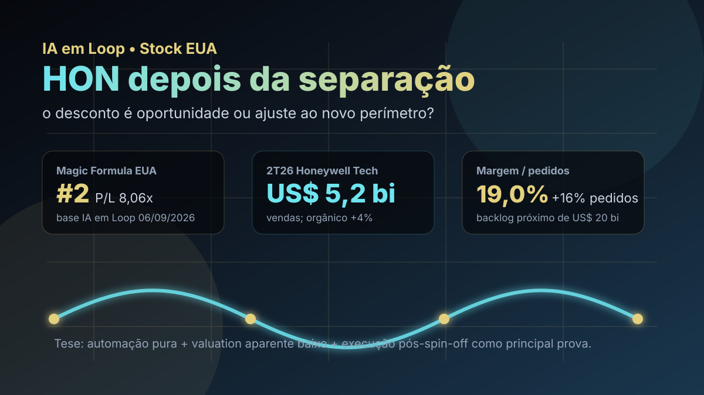

07/10: HON, Honeywell e o teste da automação depois do spin-off
A Honeywell deixou de ser lida como conglomerado amplo e virou uma tese mais concentrada em automação. A pergunta central é simples: o valuation aparentemente baixo compensa o risco de execução de uma empresa recém-reconfigurada?

Depois da separação da Aerospace, HON passa a ser analisada como uma plataforma de automação; o desconto só é útil se a nova estrutura converter backlog e margem em caixa recorrente.
Resposta curta: valuation chama atenção, mas o caso virou prova de execução
Na base IA em Loop de setembro de 2026, HON aparece em #2 na Magic Formula EUA e em #13 no ranking BESST & Buffett EUA. Os números de base são fortes para triagem: P/L de 8,06x, EV/EBITDA de 10,87x, ROE de 46,58%, dividend yield de 1,34% e preço-base de US$ 209,61. Em tela quantitativa, isso parece uma combinação rara de qualidade, preço e retorno sobre capital.
O problema é que HON de 2026 não é exatamente a Honeywell antiga. Em 29 de junho de 2026, a companhia concluiu o spin-off da Honeywell Aerospace, que passou a operar separadamente como HONA. O ticker HON ficou com Honeywell Technologies, uma empresa mais pura em automação, processos, edifícios e soluções industriais. Portanto, parte dos múltiplos precisa ser lida com cuidado: a fotografia histórica captura uma transição de perímetro.
O que favorece HON
O primeiro ponto favorável é foco. Uma Honeywell Technologies mais concentrada em automação tende a ser mais fácil de comparar com pares industriais e de software/controle, e menos dependente da mistura de narrativas do conglomerado. Para o investidor, simplificação pode destravar leitura de margem, crescimento orgânico, alocação de capital e múltiplo justo.
O segundo ponto é que o primeiro resultado pós-reconfiguração trouxe sinais úteis. No 2T26, a Honeywell Technologies reportou vendas de US$ 5,2 bilhões, crescimento orgânico de 4%, margem de segmento de 19,0%, pedidos orgânicos 16% maiores e backlog próximo de US$ 20 bilhões. Em automação, backlog e conversão importam porque indicam se a demanda industrial está virando receita, margem e caixa.
| Métrica | Valor | Leitura |
|---|---|---|
| Vendas 2T26 | US$ 5,2 bi | base pós-spin-off para acompanhar o novo perímetro |
| Crescimento orgânico | +4% | sinal de demanda, ainda sem exuberância |
| Margem de segmento | 19,0% | rentabilidade industrial relevante |
| Pedidos orgânicos | +16% | melhor indicador prospectivo que receita isolada |
| Backlog | ~US$ 20 bi | visibilidade, desde que convertido com margem |
O que ameaça a tese
O principal risco é extrapolar múltiplos sem ajustar a mudança estrutural. Quando uma empresa separa unidades, o investidor precisa reavaliar dívida, margens, mix de negócios, custos corporativos, dividendos, recompras e comparáveis. Um P/L baixo pode ser oportunidade; também pode refletir confusão temporária do mercado sobre o lucro normalizado da nova companhia.
O segundo risco é ciclo industrial. Automação vende eficiência, produtividade, segurança e controle, mas seus clientes ainda dependem de capex, confiança empresarial, energia, indústria, utilities, armazéns e projetos de longo prazo. Se pedidos desacelerarem ou se backlog converter com menos margem, a tese de reprecificação perde força.
HON merece watchlist porque une ranking quantitativo forte e evento societário relevante. Mas o ponto decisivo não é copiar o ranking: é acompanhar se a Honeywell Technologies consegue provar crescimento orgânico, margem e caixa como empresa mais focada em automação.
Favoráveis e desfavoráveis
Favoráveis
• Magic Formula EUA #2, com P/L baixo na base IA em Loop.
• ROE elevado e EV/EBITDA moderado para uma franquia industrial global.
• Spin-off aumenta foco estratégico em automação.
• 2T26 mostrou crescimento orgânico, expansão de margem e pedidos fortes.
• Backlog próximo de US$ 20 bilhões dá visibilidade operacional.
Desfavoráveis
• Histórico e múltiplos exigem cuidado por causa da mudança de perímetro.
• Automação continua exposta a ciclo de capex industrial.
• Dividend yield não é o motor principal da tese.
• Integração de custos, portfólio e alocação pós-spin-off ainda precisa ser observada.
• A comparação com pares pode mudar quando o mercado normalizar as bases.
Checklist para acompanhar daqui em diante
| Ponto | O que monitorar | Se piorar |
|---|---|---|
| Pedidos | crescimento orgânico de orders por segmento | backlog perde força prospectiva |
| Margem | margem de segmento e ponte de preço, volume e inflação | valuation baixo pode ser armadilha operacional |
| Caixa | conversão de lucro em fluxo de caixa livre | ROE alto não se traduz em retorno ao acionista |
| Portfólio | vendas de ativos, aquisições e custos corporativos | tese de foco fica diluída |
| Guidance | faixas de vendas, EPS ajustado e FCF pós-spin-off | mercado revisa lucro normalizado |
Conclusão
A resposta para a pergunta do post é: HON parece barata e melhor ranqueada, mas a assimetria depende de execução pós-spin-off. O ranking aponta uma oportunidade estatística; o evento societário obriga uma leitura qualitativa adicional.
Na régua do IA em Loop, Honeywell Technologies é um bom estudo de stock americana fora da carteira: uma empresa industrial global, agora mais focada, com métricas quantitativas atraentes e um teste claro pela frente. Se pedidos, margem e caixa confirmarem a tese, o mercado pode reprecificar HON como plataforma de automação. Se a transição trouxer ruído ou desaceleração, o desconto pode continuar merecido.